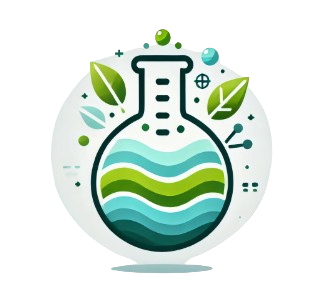

yu.chongxu.g1@s.mail.nagoya-u.ac.jp
yu.chongxu.g1@s.mail.nagoya-u.ac.jp

Department of Civil and Environmental Engineering, GSE, Nagoya University
yu.chongxu.g1@s.mail.nagoya-u.ac.jp
Once majored in Water Conservancy and Hydropower Engineering in China,
then join the Master course in GSE, Nagoya University.Now interest in
the regional flood risk and sustainability of Water Environment.
Designation and management of Water Conservancy structures
Application of Hydropower
Flood Risk Assessment based on GIS and AI
Land Use Change and Ecosystem services Assessment

Hebei University of Water Resources and Electric Engineering
2020.09-2024.07 Water Conservancy and Hydropower Engineering
Nagoya University
2024.10-2026.09 Department of Civil and Environmental Engineering